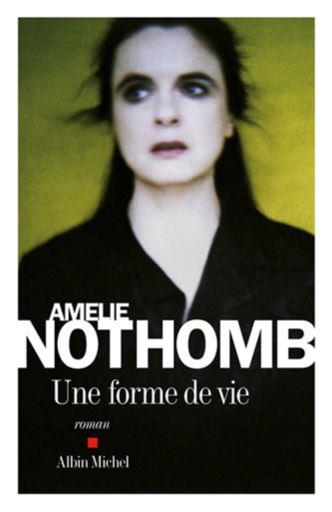
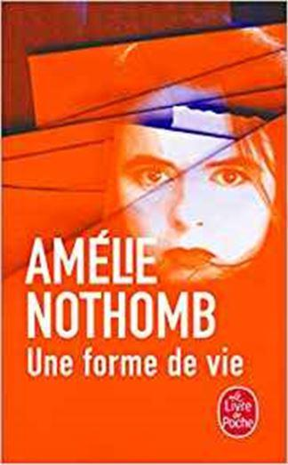
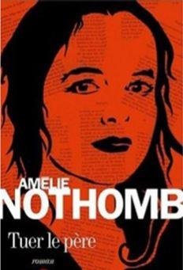
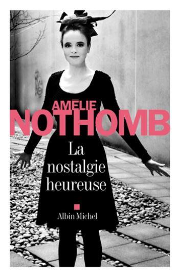

Je parlerai aujourd’hui de trois romans d’Amélie Nothomb pour faire suite à ma rubrique précédente. A. Nothomb surprend toujours son public, tant par la grandeur de ses ouvrages que par ses médiocres prestations. Pour rester entièrement subjectif je dirai que j’apprécie plus que d’autres certains de ses livres, mais je ne pense pas avoir rencontré pareille ambivalence vis-à-vis d’un autre auteur. Soit l’écriture de tel ou tel me plaît soit elle me déplaît. Parfois il est vrai je peux trouver que tel livre de tel auteur que j’aime est un ratage, ou que telle œuvre d’un auteur que j’apprécie moins est une réussite. Mais en règle générale j’aime le style, la façon d’écrire et le courant passe... ou il ne passe pas. Avec Nothomb c’est tout différent ; je trouve parfois son écriture sublime et parfois elle me semble très plate et il en est de même de son inventivité romanesque.
Il doit y avoir deux ou trois ouvrages d’elle que je n’ai pas lus. Le hasard me les mettra certainement sous la main, en attendant voici le résumé de trois de ces livres que j’ai lus récemment.
UNE FORME DE VIE
Paru en 2010 toujours chez Albin Michel, son éditeur habituel, « Une forme de vie », par Amélie Nothomb est un grand crû. Court roman de 123 pages, on ne lâche pas l’ouvrage jusqu’à la dernière.
Quand Amélie Nothomb parle d’elle à la première personne c’est toujours réussi. Dans cet ouvrage, elle parle de l’écrivain Amélie Nothomb, de son quotidien et de ses échanges épistolaires avec ses lecteurs. L’ouvrage est truffé de remarques intelligentes sur l’écriture, sur les différentes formes d’écriture. Écrire une lettre est un acte différent de l’écriture d’un roman : on s’adresse à quelqu’un dans un courrier, on ne s’adresse en personne en particulier dans un roman.
Réflexions profondes aussi sur la liberté épistolaire ; doit-on relancer une personne qui a cessé de correspondre ? Peut-être est-elle dans l’impossibilité de continuer cette correspondance ? Ce qui fait que :
« Il faut se résigner, on mourra sans savoir et sans savoir si l’ami eût voulu qu‘on se préoccupât de son sort. On mourra sans savoir si l’on est un salaud indifférent ou si l’on est une personne respectueuse de la liberté d’autrui. » p. 91. »
La charpente de l’ouvrage se forme dans un échange épistolaire entre A. Nothomb et un soldat américain en opération en Irak. L’échange de lettres est plaisant à lire, il intrigue au début et finit par passionner, petit à petit on se laisse embarquer dans l’aventure et on guette le passage du facteur.
Parfois Nothomb interrompt cette correspondance martiale et nous parle d’une autre lectrice, on lit par politesse cet échange importun avant de se jeter sur la missive du militaire que nous attendons impatiemment.
On retrouvera, dans Une forme de vie, un thème cher à Nothomb : le rapport de l’être à la nourriture, et là, l’auteur nous offre sur le sujet quantité de réflexions copieuses qui se dégustent en fin gourmet. Des pensées aussi surprenantes qu’intelligentes s’étalent sur le papier concernant l’action de se nourrir, dans une langue ciselée et pure. Que demander de plus ?
Reste la fin qui ne nous laisse pas sur notre faim, Nothomb nous a habitués aux fins de roman en queue de poisson. Ce n’est pas le cas ici, la fin ressemble à une farce tragique qui nous fait rire d’un rire nerveux qui nous met mal à l’aise et c’est tant mieux !
TUER LE PÈRE
Tuer le père est un roman d’Amélie Nothomb paru en 2011 bien évidemment chez Albin Michel. C’est une fiction qui raconte un Œdipe d’adolescence chez les gens du cirque, à moitié artistes de la balle et à moitié ex baba cool post soixante-huitards. Nothomb parle d’elle en deux mots au début et à la fin de l’histoire, cela n’en fait pas une histoire réussie.
Ça parle de magie, puisque le petit Œdipe, très doué pour les tours de cartes devient magicien, en fait illusionniste.
Après une enfance malheureuse, il est chassé de chez lui, il rencontre adolescent un grand illusionniste qui l’initiera aux tours de cartes. Ce père adoptif est en effet un très grand illusionniste.
L’épouse ou la compagne de ce père adoptif, on ne sait pas trop, est danseuse, cracheuse de feu ou acrobate, peut-être les trois à la fois. Chaque année ils se rendent tous les deux à un grand rassemblement artistico-hippies. Une année ils emmènent avec eux le petit chérubin qui prendra un acide comme les grandes personnes et finira par coucher avec l’imago de la mère.
Cet Œdipe, enfant de la balle, devient croupier, il trahit les beaux principes de morale inculqués par ce père symbolique et adoptif et traficote dans les casinos.
La morale de l’histoire, c’est que le père trahi -plus dans ses principes moraux que par le cocufiage filial- suit comme une ombre l’enfant incestueux devenu adulte. Il ne lui parle pas, ne lui dit rien mais se contente d’être présent tel un fantôme dans tous les casinos où se produit le rejeton.
Ce n’est pas vraiment emmerdifiant, c’est juste ennuyeux, mais lisible. Tout à fait le genre de premier roman que les éditeurs reçoivent par la poste et auquel ils répondent poliment que l’écrit ne correspond pas à la ligne éditoriale de la maison. Mais Nothomb n’en est pas à son premier roman et son éditeur sait qu’un tirage minimum est assuré. Point barre.
LA NOSTALGIE HEUREUSE
La nostalgie heureuse est un roman autobiographique d’Amélie Nothomb, paru en 2014 chez Albin Michel. Le titre en lui-même est un oxymore, mais qu’est-ce qui n’est pas paradoxal chez Nothomb ? Dans cet ouvrage l’auteur parle d’elle, donc c’est totalement réussi !
Elle nous raconte son voyage au Japon, un retour sur les pas de son enfance, dans son pays natal, ou pays natal inventé. A. Nothomb est-elle née au Japon ou en Belgique puis installée très tôt au Japon ? Les biographies divergent, et quelque part c’est tant mieux, ça fait un peu de suspens...
Quoi qu’il en soit, on est aussi ému qu’A. Nothomb en retrouvant Nishio-san, sa nounou adorée, qui dans La Métaphysique des tubes l’avait longuement regardée en train de se noyer dans le bassin à carpes avant d’intervenir et de la ramener à la surface.
On se ballade avec l’auteur dans le Japon qui n’est plus tout à fait celui de son enfance, tout change au pays du soleil levant, même si le soleil s’y lève toujours... Nous partageons la même émotion et le même émerveillement que l’auteur dans ce retour sur le passé, la même déception aussi lorsque l’on découvre que ce jardin public, objet de tant de rêves et d’émotions d’adolescence est presque devenu un carré de verdure extrêmement réduit et attenant aux habitations d’immeubles modernes qui jadis n’existaient pas. Partout la même urbanisation forcenée, partout le profit et l’égoïsme se mirent l’un dans l’autre. Mais beaucoup de nostalgie effectivement heureuse dans cet ouvrage entièrement réussi.
On y apprend d’ailleurs qu’en japonais le mot nostalgie n’a pas cette consonance de regrets tristes : la nostalgie dans cette langue mystérieuse ne peut être qu’heureuse et c’est tant mieux.
On s’arrêtera également dans le Tokyo moderne pour une expérience transcendantale, une sorte de satori que l’auteur décrit fort bien :
« Je plonge dans la foule. Tout ce qui la traverse me traverse, je voudrais que cela ne s’arrête pas. Je suis une aspirine effervescente qui se dissout dans Tokyo... »
À lire sans regret et avec nostalgie, heureuse ou mélancolique...
Partager cette page